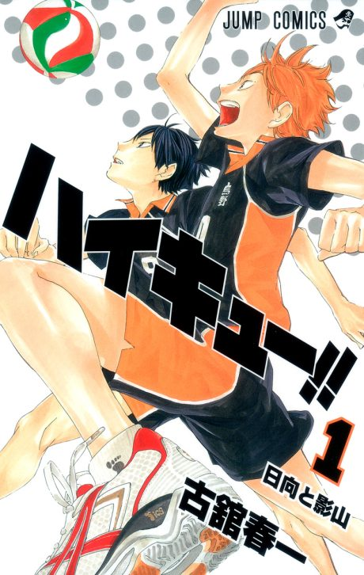

Manga continues fromCh. 326
Anime
Manga continues fromCh. 326
Anime
MangaHaikyu!!
ハイキュー!!
AniList8.3
Animeter—
5 seasons85 ep
MangaCh. 326
Anime finished. Where does the manga pick up?
Start at Chapter326
Chapter 326 picks up a match the anime skips. Jump to 338 to stay with Karasuno. Guides differ by a chapter on where the film ends.
1292325402 end
Seasons 1–4The Dumpster BattleStart reading here
Sources: Deltia's Gaming, Anime Filler Guide